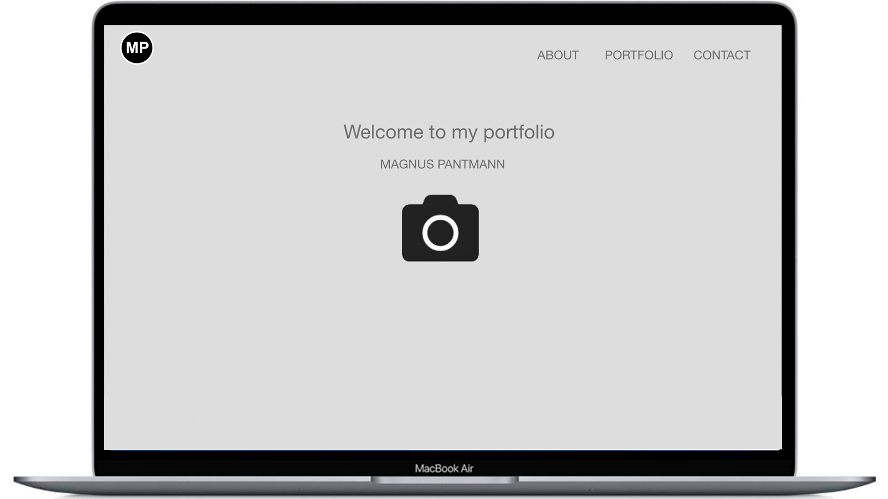

I denne opgave skulle vi hver især aflevere en portfolie lavet i Adobe XD samt en rapport med information omkring portfoliens design. Læs rapporten.
Rettelser
I den redigeret version har jeg formået at indsætte mit logo øverst i venstre hjørne, og tilføjet en kontakt knap i menuen, da jeg følte, at man som bruger ville kunne have besværligheder med at kontakte mig. I kontakt siden lavede jeg en kontakt formular, og links til mine sociale medier herunder Instagram, Twitter og Facebook. Derudover ændrede jeg også farven på siden til grå, da farven ofte symboliserer sikkerhed og neutralitet hos brugeren.
Før ændring
Efter ændring

Hvad har jeg lært?
Dette flow har været meget lærerigt i form af, at jeg har fået en forståelse hvordan man kan designe et website ved brug af Adobe XD. Jeg havde ingen erfaring med programmet før dette flow, og synes jeg lærte en hel del om dette program.
.